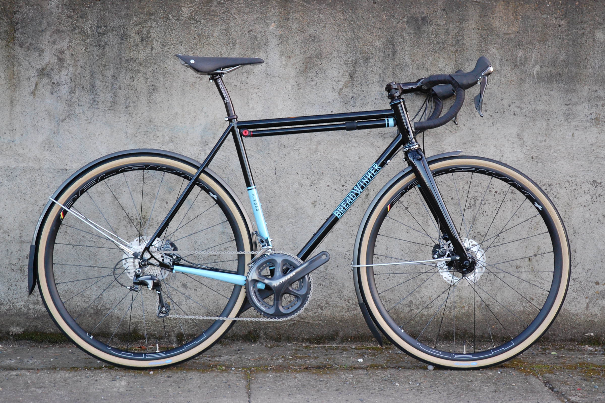

Bicycle
A bicycle, also called a cycle or bike, is a human-powered, pedal-driven, single-track vehicle, having two wheels attached to a frame, one behind the other. The bicycle's invention has had an enormous effect on society, both in terms of culture and of advancing modern industrial methods. Several components that eventually played a key role in the development of the automobile were initially invented for use in the bicycle, including ball bearings, pneumatic tires, chain-driven sprockets and tension-spoked wheels.
History
The first mechanically-propelled, two-wheeled vehicle may have been built by Kirkpatrick MacMillan, a Scottish blacksmith, in 1839, although the claim is often disputed.After that in the early 1860s, Frenchmen Pierre Michaux and Pierre Lallement took bicycle design in a new direction by adding a mechanical crank drive with pedals on an enlarged front wheel. In the 1870s many cycling clubs flourished. They were popular in a time when there were not cars on the market and the principal mode of transportation was horse-drawn vehicles, such the horse and buggy or the horsecar. Among the earliest clubs was The Bicycle Touring Club, which has operated since 1878. By the turn of the century, cycling. Bicycles and horse buggies were the two mainstays of private transportation just prior to the automobile.
Uses
From the beginning and still today, bicycles have been and are employed for many uses. In a utilitarian way, bicycles are used for transportation, bicycle commuting, and utility cycling. It can be used as a 'work horse', used by mail carriers, paramedics, police, messengers, and general delivery services. The bicycle is also used for recreational purposes, such as bicycle touring, mountain biking, physical fitness, and play. Bicycle competition includes racing, BMX racing, track racing, criterium, roller racing, sportives and time trials.